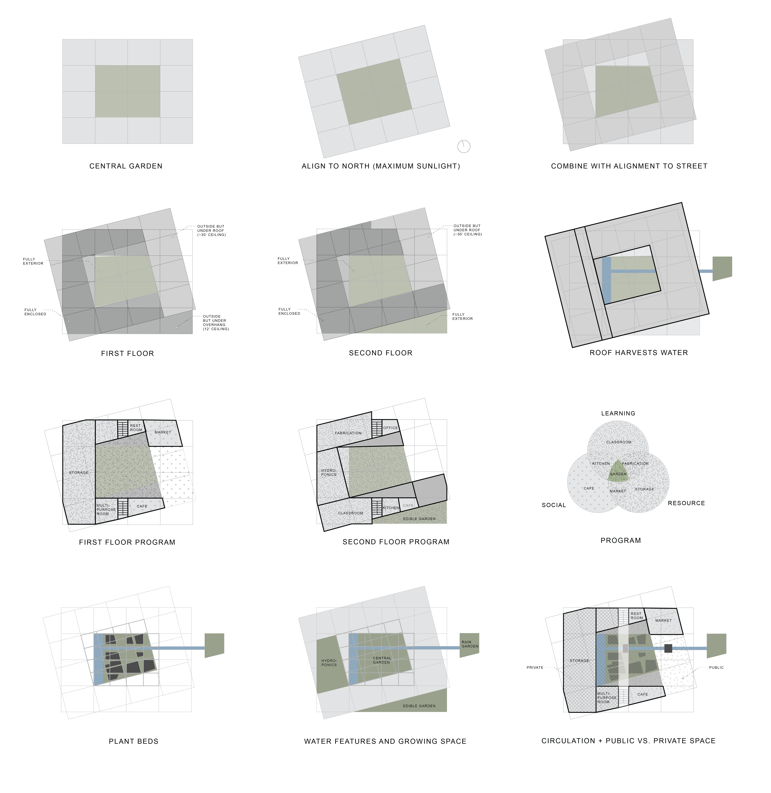
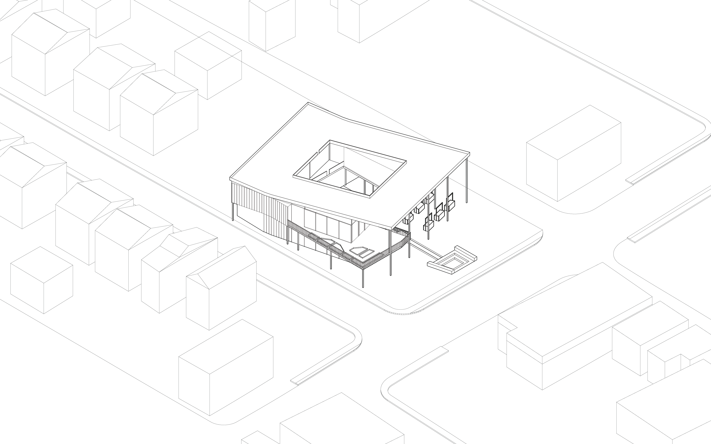
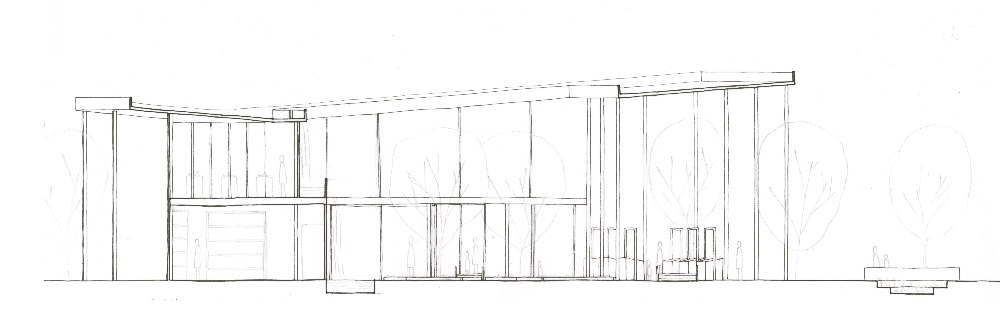
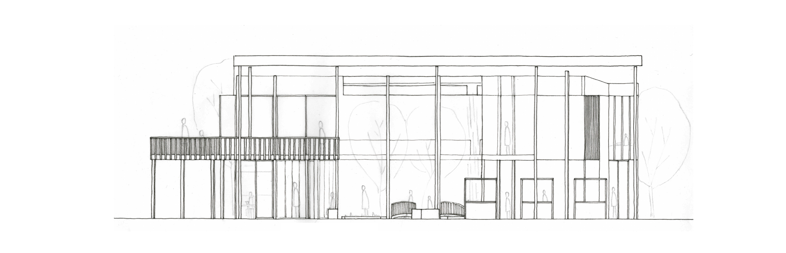
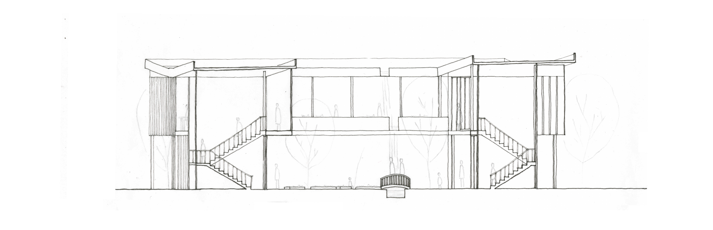

WHAT: URBAN AGRICULTURE CENTER LOCATION: HOMEWOOD, PITTSBURGH, PA
WHEN: OCTOBER-DECEMBER 2017 PROFESSORS: JOSH BARD, LORI FITZGERALD
An urban agriculture center as an instrument for members of the community to engage with each other, with the environment, and with nature. The building would serve three purposes: as a resource, as a place to learn, and as a place to gather.

01 STORY
This agriculture center is at the center of Homewood- I envision people would walk by or drive by and be curious as to what is going on and want to get involved. Closer to the streets, there is a cafe and market used to engage the public and lure them in. At the center is the garden that serves as a place to meet others, grow food, and learn more. While you're in the garden, you can look up on the second floor and see the classrooms, fabrication space, and more agricultural learning. The ultimate goal is to get members of the neighborhood to be involved in the community.

02 RENDER

03 DIAGRAMS SERVE A GENERATIVE PART OF THE DESIGN PROCESS

04 AXONOMETRIC WITH SITE
Pittsburgh is known for raining a lot, so I wanted to collect water to help water the vegetation and make the agriculture look more beautiful while educating those that visited. The roof is sloped and collects water when it rains, and creates a waterfall. Then the water travels to the rain garden in the front.

05 SECOND FLOOR PLAN

06 GROUND FLOOR PLAN

07 ELEVATION

08 SECTION

09 SHORT ELEVATION

10 SHORT SECTION